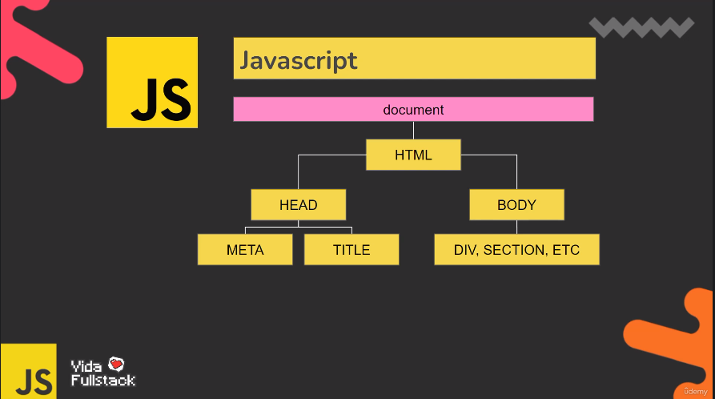

O DOM (Document Object Model) é uma interface de programação para documento HTML, XML, SVG.
Ele fornece uma representação estruturada do documento como uma árvore.

O DOM define métodos que permitem acesso à árvore para que eles possam alterar a estrutura,
estilo e conteúdo do documento.